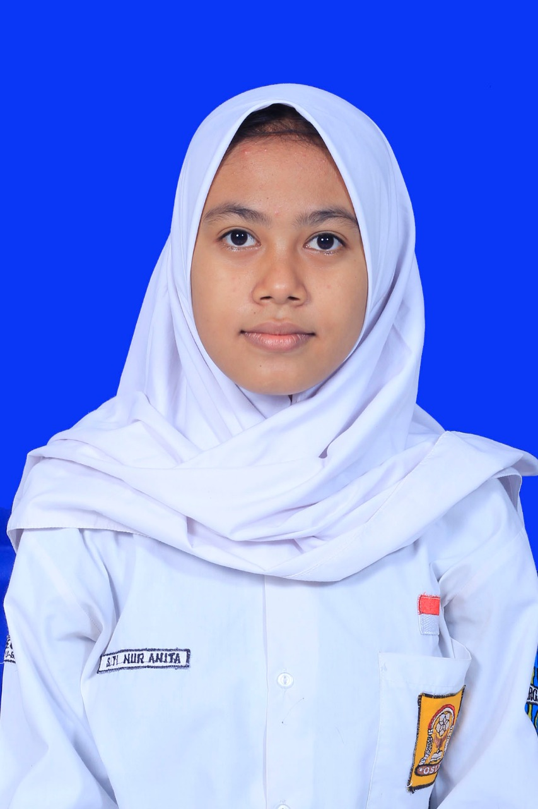

Jurusan yang dibentuk dari penggabungan jurusan Teknik elektronika industri dengan Mekatronika. Hasil kebijakan pemerintah yang pada kurikulum merdeka. Pada tingkat 10, para siswa/i akan mempelajari dasar kompetensi keahlian yang sama. Ketika naik ke tingkat 11, siswa/i bisa memilih konsentrasi kompetensi keahlian, konsentrasi kompetensi keahliannya adalah :
TEKNIK ELEKTRONIKA INDUSTRI (TEI) Teknik Elektronik Industri (TEI) adalah bidang yang fokus mempelajari tentang komponen listrik serta berbagai macam peralatan semi konduktor.
Dalam perjalanan Paket keahlian Elektronika Industri sejak berdiri tahun 1999 mengalami beberapa perubahan struktur kurikulum dan untuk saat ini menggunakan struktur kurikulum 2013. Hal ini bertujuan untuk memperlancar proses perjalanan pembelajaran Paket Keahlian Elektronika Industri.
Ilmu teknik mekatronika sinergis (gabungan) dari beberapa cabang ilmu keteknikan, seperti teknik mesin/mekanik, teknik kendali, teknik elektro, dan ilmu komputasi (computer science, software and hardware).
Kompetensi Keahlian Teknik Mekatronika di SMK Negeri Katapang telah ada sejak tahun 2014 dimulai dengan program 3 tahun. Program 4 tahun dimulai pada tahun 2017. Dan ketika kurikulum berubah ke kurikulum Merdeka di tahun 2021, Masa pembelajaran di ubah menjadi 3 tahun kembali
Sekolah Menengah Kejuruan (SMK) sebagai bentuk satuan pendidikan kejuruan sebagaimana ditegaskan dalam penjelasan Pasal UU SISDIKNAS, merupakan pendidikan menengah yang mempersiapkan peserta didik terutama untuk bekerja dalam bidang tertentu. Tujuan umum dan tujuan khusus pendidikan menengah kejuruan adalah sebagai berikut.
Sekolah Menengah Kejuruan (SMK) sebagai bentuk satuan pendidikan kejuruan sebagaimana ditegaskan dalam penjelasan Pasal UU SISDIKNAS, merupakan pendidikan menengah yang mempersiapkan peserta didik terutama untuk bekerja dalam bidang tertentu
Fasilitas yang ada pada bengkel program keahlian Elektronika Industri, yaitu sebagai berikut:
Kerja Bangku Adalah pekerjaan perkakas tangan yang di gunakan untuk melakukan pembentukan, perbaikan dan perakitan yang sesuai dengan masing-masing fungsi peralatan tangan dengan mesin dan semua pekerjaan dilakukan di atas meja kerja (work bench). Kerja bangku meliputi pekerjaan yang bisa atau dapat dilakukan diatas meja. Contohnya: Mengikir, mengetap, menggeerinda ,menandai, menggergaji, menekuk, mengebor dan  pekerjaan merakit serta finishing.
Pneumatik berasal dari kata dasar pnue yang berarti udara tekan dan matik yang berarti ilmu atau hal-hal yang berhubungan dengan sesuatu, sehingga arti lengkap pneumatik adalah ilmu/hal-hal yang berhubungan dengan udara bertekanan
Ruangan yang diperuntukkan sebagai kelas biasa yang berarti tidak digunakan untuk keperluan praktek siswa dalam memenuhi mata pelajaran produktif.
Ruang yang di fungsikan sebagai ruang penyimpanan alat dan bahan yang dibutuhkan dalam pembelajaran produktif.
| Nama jurusan/Konsentrasi | : | Elektronika industri |
|---|---|---|
| Tahun Didirikan | : | 1999 |
| Masa Belajar | : | 3 Tahun |
| Kurikulum | : | pk |
| Kerjasama Industri | : | PT Len,Tembaga Elektronika Negara,PT Pindai,PT Inti, PLN,Telkom. |
| Prestasi | : |
|
| |
||
| |
||
| Nama jurusan/konsentrasi | : | Mekatronika |
| Tahun Didirikan | : | 2014 |
| Masa Belajar | : | 3 Tahun |
| Kurikulum | : | pk |
| Kerjasama Industri | : | PKL dengan PT. Pudak Scientific, Program guru magang dengan PT. Aptech, Kunjungan Industri dengan PT. Sosro |
| Prestasi | : |
|
| Denah | : | |
| Nama | : | Muhammad Rayhan Fathurrakhman | |
|---|---|---|---|
| Alamat | : | Sanggar Indah Lestari Rt 06 Rw 12 | |
| No Hp | : | 081224018624 | |
| Nama | : | Kamelia Safarina Nurul Anwar | |
| Alamat | : | Saluyu Selatan Rt 04 Rw 14 | |
| No Hp | : | 085722482449 | |
| Nama | : | Rafly Putra Anggara | |
| Alamat | : | Jln Bihbul Raya Rt 11 Rw 02 | |
| No Hp | : | 088214942380 | |
| Nama | : | Salma Salsabila | |
| Alamat | : | Kp cangkuang Rt Rw | |
| No Hp | : | 085871312138 | |
|  | Nama | : | Siti Nur Anita |
| Alamat | : | Permata Kopo Rt 03 Rw 16 | |
| No Hp | : | 0882000436818 | |
| Mamat Rahmat,S.Pd,MM |
|---|
{kind=link}